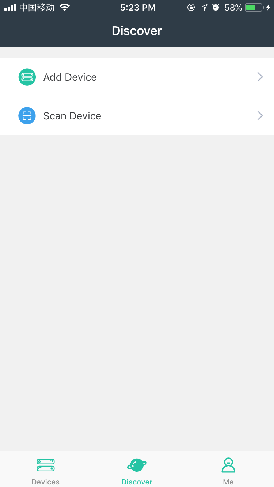

Scan the 1D device serial number to quickly access the matched device in the device list. If a match cannot be found, "The device has not been added" will be displayed.
Scan the 1D code in either of the following ways:
1. Touch
 on the title bar of the home page.
on the title bar of the home page.
2. Select the "Search" tab, and touch "Scan Device".
